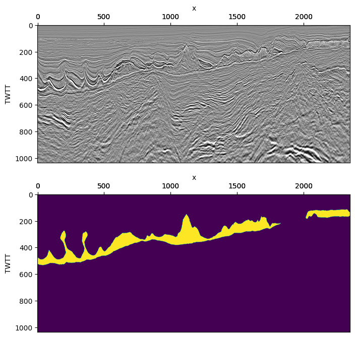
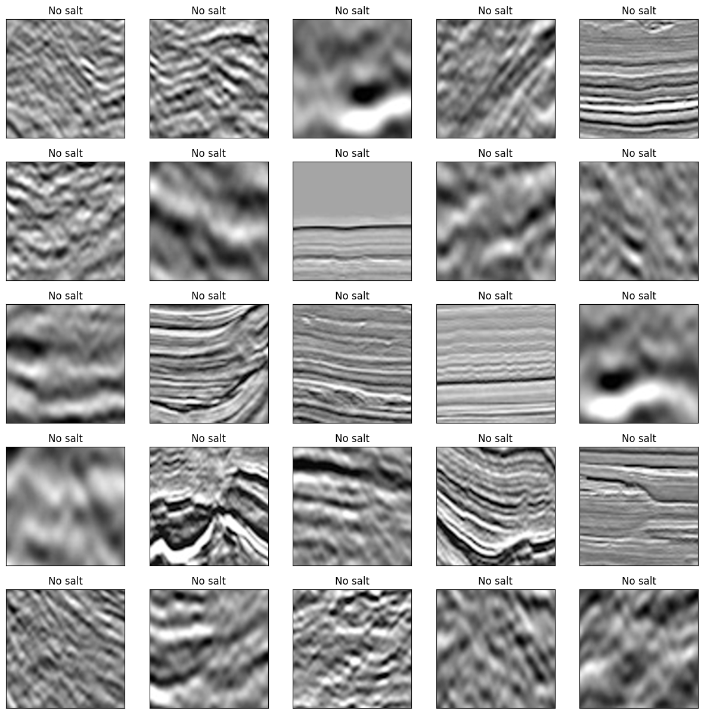
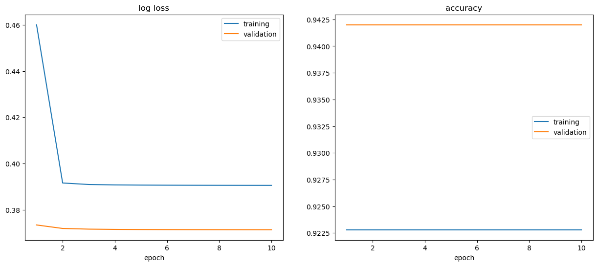
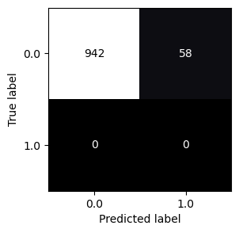

Identifying Salt in Seismic Sections Using a Deep Learning Model#
import matplotlib.pyplot as plt
import matplotlib.image as mpimg
import numpy as np
import random
from sklearn.metrics import accuracy_score, ConfusionMatrixDisplay
import torch
import torch.nn as nn
import torch.nn.functional as F
from torch.utils.data import TensorDataset, DataLoader
from torchsummary import summary
import warnings
warnings.filterwarnings('ignore')
def set_seed(seed):
"""Set ALL the random seeds to a fixed value and take out any randomness from cuda kernels."""
random.seed(seed)
np.random.seed(seed)
torch.manual_seed(seed)
torch.cuda.manual_seed_all(seed)
torch.backends.cudnn.benchmark = False # uses the inbuilt cudnn auto-tuner to find the fastest convolution algorithms.
# Useful when inputs do not change size.
torch.backends.cudnn.enabled = False
return True
# Set up device
device = 'cpu'
if torch.cuda.device_count() > 0 and torch.cuda.is_available():
print("Cuda installed! Running on GPU!")
device = 'cuda'
else:
print("No GPU available!")
device = 'cpu'
No GPU available!
Visualise the seismic section and salt#
data = mpimg.imread('../data/seismic.tif')
data.shape
(1036, 2350, 3)
mask = mpimg.imread('../data/mask.tif')
mask.shape
(1036, 2350)
# Scale data
data = data[:, :, :1]/255 # Use only the first channel
mask = (mask - mask.min()) / (mask.max() - mask.min())
# Visualise the data
fig, axs = plt.subplots(2, 1, figsize=(8, 8))
axs[0].matshow(data[:, :, 0], interpolation='spline16', cmap=plt.cm.gray, aspect=1)
axs[0].tick_params(top=True, labeltop=True, bottom=False, labelbottom=False)
axs[0].set_ylabel("TWTT")
secax = axs[0].secondary_xaxis('top')
secax.set_xlabel('x')
axs[1].matshow(mask, interpolation='spline16', aspect=1)
axs[1].tick_params(top=True, labeltop=True, bottom=False, labelbottom=False)
axs[1].set_ylabel("TWTT")
secax = axs[1].secondary_xaxis('top')
secax.set_xlabel('x');

Create a dataset#
เราต้องมี seismic section มากกว่านี้ในการเทรน deep learning model แต่เราไม่มีเวลา เราจะแบ่ง seismic section (input) และ mask (label) ออกเป็นหลาย ๆ ภาพแทน
def patchify(data, mask, num_patches, img_dim):
X = np.empty((num_patches, *img_dim))
y = np.empty((num_patches, 1))
t_max, x_max, _ = data.shape
for n in range(num_patches):
# Select a random point in the seismic section (not at the edge)
x_n = random.randint(
img_dim[1]//2,
x_max - img_dim[1]//2
)
t_n = random.randint(
img_dim[0]//2,
t_max - img_dim[0]//2
)
# Crop image around the random point
X[n, :, :, 0] = data[
t_n - img_dim[0]//2: t_n + img_dim[0]//2,
x_n - img_dim[1]//2: x_n + img_dim[1]//2,
0
]
# Label (0 = non-salt, 1 = salt)
if mask[t_n, x_n] >= 0.1:
y[n] = 1
else:
y[n] = 0
return X, y
num_train_samples = 5000 # The number of training samples
num_test_samples = 1000 # The mumber of validation samples
img_dim = (64, 64, 1) # The size of a sample
# Train-test split
X_train, y_train = patchify(data[:, :1200], mask[:, :1200], num_train_samples, img_dim)
X_test, y_test = patchify(data[:, 1200:], mask[:, 1200:], num_test_samples, img_dim)
# Visualise some samples
fig, axs = plt.subplots(5, 5, figsize=(15, 15))
for m in range(5):
for n in range(5):
idx = 5*m + n
axs[m, n].imshow(X_train[idx, :, :, 0], interpolation='spline16', cmap=plt.cm.gray, aspect=1)
axs[m, n].set(xticks=[], yticks=[])
if y_train[idx, 0] == 1:
axs[m, n].set_title('salt')
else:
axs[m, n].set_title('No salt')

# Create TensorDataset
train_set = TensorDataset(torch.Tensor(X_train), torch.Tensor(y_train))
test_set = TensorDataset(torch.Tensor(X_test), torch.Tensor(y_test))
# CNN
class CNN(nn.Module):
def __init__(self):
super(CNN, self).__init__()
self.model = nn.Sequential(
nn.Conv2d(1, 16, kernel_size=3, stride=1, padding=1),
nn.ReLU(),
nn.MaxPool2d(kernel_size=2, stride=2),
nn.Conv2d(16, 32, kernel_size=3, stride=1, padding=1),
nn.ReLU(),
nn.MaxPool2d(kernel_size=2, stride=2),
nn.Conv2d(32, 64, kernel_size=3, stride=1, padding=1),
nn.ReLU(),
nn.MaxPool2d(kernel_size=2, stride=2),
nn.Flatten(start_dim=1),
nn.Linear(4096, 512, bias=True),
nn.ReLU(),
nn.Linear(512, 2, bias=True),
nn.Softmax()
)
def forward(self, X):
return self.model(X)
X = torch.randn(1, 1, 64, 64).to(device)
model = CNN().to(device)
y = model(X)
summary(model, (1, 64, 64))
----------------------------------------------------------------
Layer (type) Output Shape Param #
================================================================
Conv2d-1 [-1, 16, 64, 64] 160
ReLU-2 [-1, 16, 64, 64] 0
MaxPool2d-3 [-1, 16, 32, 32] 0
Conv2d-4 [-1, 32, 32, 32] 4,640
ReLU-5 [-1, 32, 32, 32] 0
MaxPool2d-6 [-1, 32, 16, 16] 0
Conv2d-7 [-1, 64, 16, 16] 18,496
ReLU-8 [-1, 64, 16, 16] 0
MaxPool2d-9 [-1, 64, 8, 8] 0
Flatten-10 [-1, 4096] 0
Linear-11 [-1, 512] 2,097,664
ReLU-12 [-1, 512] 0
Linear-13 [-1, 2] 1,026
Softmax-14 [-1, 2] 0
================================================================
Total params: 2,121,986
Trainable params: 2,121,986
Non-trainable params: 0
----------------------------------------------------------------
Input size (MB): 0.02
Forward/backward pass size (MB): 2.01
Params size (MB): 8.09
Estimated Total Size (MB): 10.12
----------------------------------------------------------------
def train(model, optimizer, criterion, data_loader):
model.train()
train_loss, train_accuracy = 0., 0.
for X, y in data_loader:
X, y = X.to(device), y.to(device)
optimizer.zero_grad()
y_pred = model(X.view(-1, 1, 64, 64))
loss = criterion(y_pred, y.flatten().long())
loss.backward()
train_loss += loss*X.size(0)
y_pred = y_pred.max(1)[1]
train_accuracy += accuracy_score(y.cpu().numpy(), y_pred.detach().cpu().numpy())*X.size(0)
optimizer.step()
avg_train_loss = train_loss/len(data_loader.dataset)
avg_train_accuracy = train_accuracy/len(data_loader.dataset)
return avg_train_loss, avg_train_accuracy
def validate(model, criterion, data_loader):
model.eval()
val_loss, val_accuracy = 0., 0.
for X, y in data_loader:
with torch.no_grad():
X, y = X.to(device), y.to(device)
y_pred = model(X.view(-1, 1, 64, 64))
loss = criterion(y_pred, y.flatten().long())
val_loss += loss*X.size(0)
y_pred = y_pred.max(1)[1]
val_accuracy += accuracy_score(
y.cpu().numpy(),
y_pred.cpu().numpy()
)*X.size(0)
avg_val_loss = val_loss/len(data_loader.dataset)
avg_val_accuracy = val_accuracy/len(data_loader.dataset)
return avg_val_loss, avg_val_accuracy
def evaluate(model, data_loader):
model.eval()
ys, y_preds = [], []
for X, y in data_loader:
with torch.no_grad():
X, y = X.to(device), y.to(device)
y_pred = model(X.view(-1, 1, 64, 64))
y_pred = y_pred.max(1)[1]
ys.append(y.cpu().numpy())
y_preds.append(y_pred.cpu().numpy())
return np.concatenate(y_preds, 0), np.concatenate(ys, 0)
# Set hyperparameters
seed = 42
lr = 1e-2
momentum = 0.5
batch_size = 64
test_batch_size = 100
n_epochs = 10
# Initialise the CNN, an SGD optimiser and a loss function
model = CNN().to(device)
optimizer = torch.optim.SGD(model.parameters(), lr=lr, momentum=momentum)
criterion = nn.CrossEntropyLoss()
# Create data loaders
train_loader = DataLoader(train_set, batch_size=batch_size, shuffle=True, num_workers=0)
test_loader = DataLoader(test_set, batch_size=test_batch_size, shuffle=False, num_workers=0)
# Train and validate the network and plot its learning curves
# You can use the "livelossplot" module to plot a real-time evolution of loss and accuracy
set_seed(seed)
train_losses, train_accuracies, val_losses, val_accuracies = [], [], [], []
for epoch in range(n_epochs):
train_loss, train_accuracy = train(model, optimizer, criterion, train_loader)
train_losses.append(train_loss.item())
train_accuracies.append(train_accuracy.item())
val_loss, val_accuracy = validate(model, criterion, test_loader)
val_losses.append(val_loss.item())
val_accuracies.append(val_accuracy.item())
---------------------------------------------------------------------------
KeyboardInterrupt Traceback (most recent call last)
Cell In[19], line 6
4 train_losses, train_accuracies, val_losses, val_accuracies = [], [], [], []
5 for epoch in range(n_epochs):
----> 6 train_loss, train_accuracy = train(model, optimizer, criterion, train_loader)
7 train_losses.append(train_loss.item())
8 train_accuracies.append(train_accuracy.item())
Cell In[15], line 10, in train(model, optimizer, criterion, data_loader)
8 y_pred = model(X.view(-1, 1, 64, 64))
9 loss = criterion(y_pred, y.flatten().long())
---> 10 loss.backward()
11 train_loss += loss*X.size(0)
12 y_pred = y_pred.max(1)[1]
File ~\AppData\Local\Programs\Python\Python311\Lib\site-packages\torch\_tensor.py:492, in Tensor.backward(self, gradient, retain_graph, create_graph, inputs)
482 if has_torch_function_unary(self):
483 return handle_torch_function(
484 Tensor.backward,
485 (self,),
(...)
490 inputs=inputs,
491 )
--> 492 torch.autograd.backward(
493 self, gradient, retain_graph, create_graph, inputs=inputs
494 )
File ~\AppData\Local\Programs\Python\Python311\Lib\site-packages\torch\autograd\__init__.py:251, in backward(tensors, grad_tensors, retain_graph, create_graph, grad_variables, inputs)
246 retain_graph = create_graph
248 # The reason we repeat the same comment below is that
249 # some Python versions print out the first line of a multi-line function
250 # calls in the traceback and some print out the last line
--> 251 Variable._execution_engine.run_backward( # Calls into the C++ engine to run the backward pass
252 tensors,
253 grad_tensors_,
254 retain_graph,
255 create_graph,
256 inputs,
257 allow_unreachable=True,
258 accumulate_grad=True,
259 )
KeyboardInterrupt:
fig, axs = plt.subplots(1, 2, figsize=(15, 6))
axs[0].plot(range(1, n_epochs+1), train_losses, label="training")
axs[0].plot(range(1, n_epochs+1), val_losses, label="validation")
axs[0].set(title="log loss", xlabel="epoch")
axs[0].legend()
axs[1].plot(range(1, n_epochs+1), train_accuracies, label="training")
axs[1].plot(range(1, n_epochs+1), val_accuracies, label="validation")
axs[1].set(title="accuracy", xlabel="epoch")
axs[1].legend();

# Use the validation set to predict labels
ys, y_preds, = evaluate(model, test_loader)
# Plot confusion matrix
fig, ax = plt.subplots(figsize=(3, 3))
ConfusionMatrixDisplay.from_predictions(ys, y_preds, ax=ax, colorbar=False, cmap='bone');

Note
Accuracy ไม่ใช่ metric ที่ดี เพราะข้อมูล imbalanced (ใช้ F1 น่าจะดีกว่า)
เราสามารถพัฒนา model ได้ เช่น ทำ data augmentation, ปรับเปลี่ยน CNN architecture (เพิ่มหรือลดจำนวน layer, เปลี่ยน activation function), ทำ hyperparameter tuning